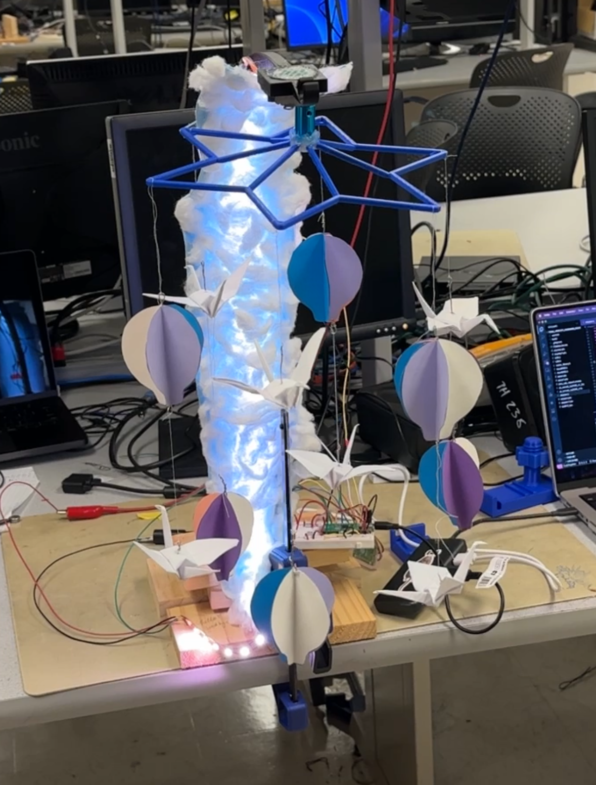

High-Level Description
The project can be broken down into three main parts: the mechanical arm setup with the stepper motor, the neopixel LEDs, and the song synthesizer. The mechanical arm supports the entire system and has a stepper motor on the top to spin the baby mobile contraption. The neopixel LEDs are attached to the inner side of the mechanical arm, such that the LEDs are visible when looking from below the mechanical arm.
